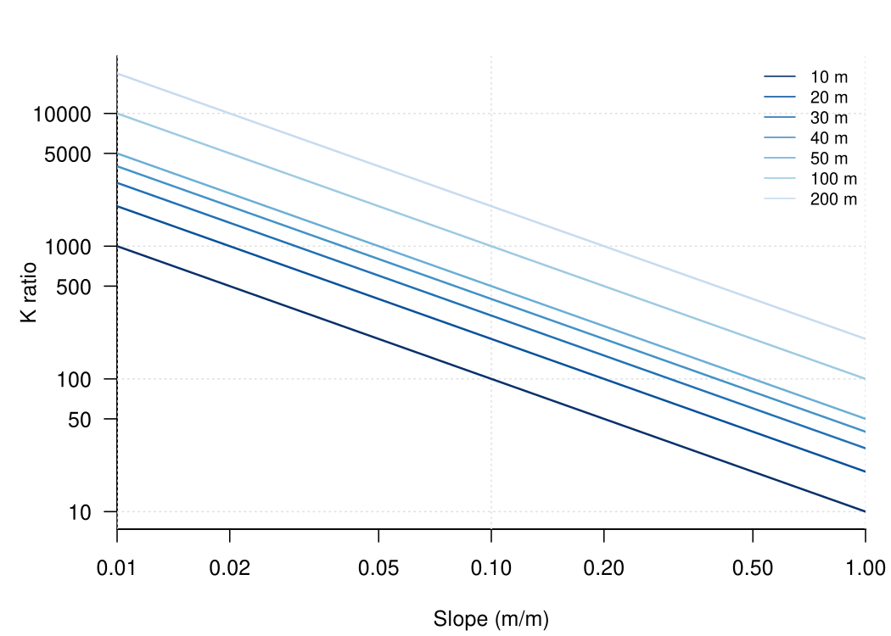
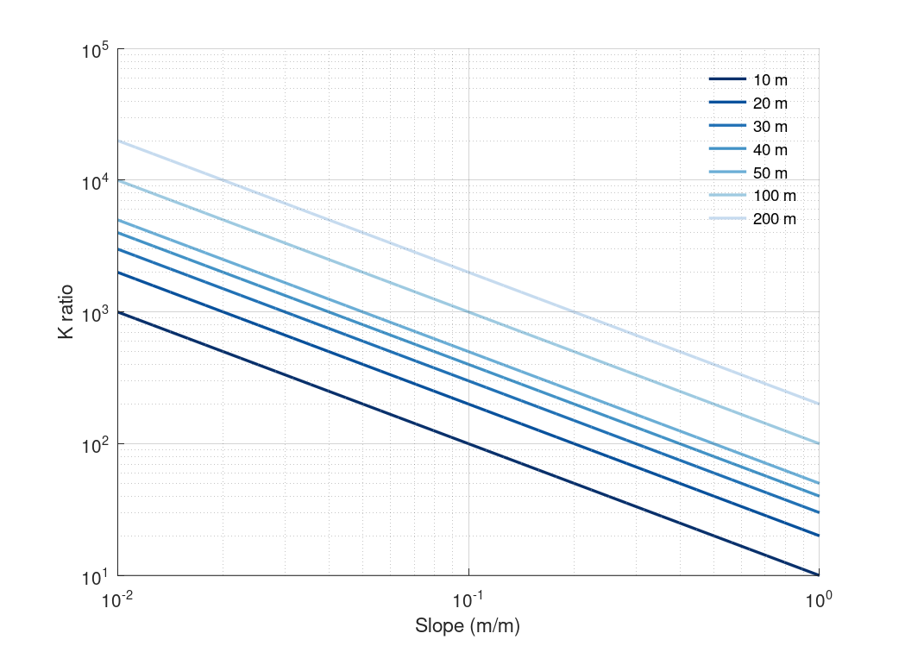

Chapter 4 · Streamflow, Runoff Generation, and Overland Flow
Conductivity ratio vs slope for different hillslope length-to-depth ratios
Ratio of lateral conductivity needed to transmit recharge vs hillslope slope, for several slope lengths.
Source: Chapter 4 draft; data supplied by the chapter author (figs/fig11.csv)
Data: fig11.csv

Code: hydraulic_conductivity_ratio.py · image: figure_python.png
"""Conductivity ratio vs slope for different hillslope length-to-depth ratios
Chapter 4 draft; data supplied by the chapter author (figs/fig11.csv)
Run: python3 hydraulic_conductivity_ratio.py -> figure_python.png"""
import numpy as np
import pandas as pd
import matplotlib
matplotlib.use("Agg")
import matplotlib.pyplot as plt
a = pd.read_csv("fig11.csv")
fig, axes = plt.subplots(1, 1, figsize=(7, 5), squeeze=False)
axes = axes[:, 0]
ax = axes[0]
ax.plot(a["slope"], a["Kratio_LD_10m"], color="#08306b", lw=1.6, ls="-", label="10 m")
ax.plot(a["slope"], a["Kratio_LD_20m"], color="#08519c", lw=1.6, ls="-", label="20 m")
ax.plot(a["slope"], a["Kratio_LD_30m"], color="#2171b5", lw=1.6, ls="-", label="30 m")
ax.plot(a["slope"], a["Kratio_LD_40m"], color="#4292c6", lw=1.6, ls="-", label="40 m")
ax.plot(a["slope"], a["Kratio_LD_50m"], color="#6baed6", lw=1.6, ls="-", label="50 m")
ax.plot(a["slope"], a["Kratio_LD_100m"], color="#9ecae1", lw=1.6, ls="-", label="100 m")
ax.plot(a["slope"], a["Kratio_LD_200m"], color="#c6dbef", lw=1.6, ls="-", label="200 m")
ax.set_xscale("log")
ax.set_yscale("log")
ax.set_xlabel("Slope (m/m)")
ax.set_ylabel("K ratio")
ax.legend(frameon=False, loc="upper right", fontsize=8)
ax.grid(alpha=0.25)
for s in ("top", "right"): ax.spines[s].set_visible(False)
fig.tight_layout()
fig.savefig("figure_python.png", dpi=150)

Code: hydraulic_conductivity_ratio.R · image: figure_r.png

# Conductivity ratio vs slope for different hillslope length-to-depth ratios
# Chapter 4 draft; data supplied by the chapter author (figs/fig11.csv)
# Run: Rscript hydraulic_conductivity_ratio.R -> figure_r.png (base R, no packages needed)
a <- read.csv("fig11.csv", stringsAsFactors = FALSE)
png("figure_r.png", width = 1050, height = 750, res = 150)
par(mfrow = c(1, 1), mar = c(4.2, 4.6, 2.2, 1), las = 1)
plot(NA, xlim = range(c(a$slope, a$slope, a$slope, a$slope, a$slope, a$slope, a$slope), na.rm = TRUE), ylim = range(c(a$Kratio_LD_10m, a$Kratio_LD_20m, a$Kratio_LD_30m, a$Kratio_LD_40m, a$Kratio_LD_50m, a$Kratio_LD_100m, a$Kratio_LD_200m), na.rm = TRUE), log = "xy", xlab = "Slope (m/m)", ylab = "K ratio", bty = "l", xaxs = "i")
grid(col = "grey88")
lines(a$slope, a$Kratio_LD_10m, col = "#08306b", lwd = 1.6, lty = 1)
lines(a$slope, a$Kratio_LD_20m, col = "#08519c", lwd = 1.6, lty = 1)
lines(a$slope, a$Kratio_LD_30m, col = "#2171b5", lwd = 1.6, lty = 1)
lines(a$slope, a$Kratio_LD_40m, col = "#4292c6", lwd = 1.6, lty = 1)
lines(a$slope, a$Kratio_LD_50m, col = "#6baed6", lwd = 1.6, lty = 1)
lines(a$slope, a$Kratio_LD_100m, col = "#9ecae1", lwd = 1.6, lty = 1)
lines(a$slope, a$Kratio_LD_200m, col = "#c6dbef", lwd = 1.6, lty = 1)
legend("topright", legend = c("10 m", "20 m", "30 m", "40 m", "50 m", "100 m", "200 m"), col = c("#08306b", "#08519c", "#2171b5", "#4292c6", "#6baed6", "#9ecae1", "#c6dbef"), lty = c(1, 1, 1, 1, 1, 1, 1), pch = c(NA, NA, NA, NA, NA, NA, NA), bty = "n", cex = 0.8)
invisible(dev.off())

Code: hydraulic_conductivity_ratio.m · image: figure_matlab.png

% Conductivity ratio vs slope for different hillslope length-to-depth ratios
% Chapter 4 draft; data supplied by the chapter author (figs/fig11.csv)
% Run: run hydraulic_conductivity_ratio.m -> figure_matlab.png (works in MATLAB and GNU Octave)
clear; close all;
fid = fopen('fig11.csv'); fgetl(fid);
C = textscan(fid, '%f%f%f%f%f%f%f%f', 'Delimiter', ',', 'EmptyValue', NaN); fclose(fid);
a.slope = C{1};
a.Kratio_LD_10m = C{2};
a.Kratio_LD_20m = C{3};
a.Kratio_LD_30m = C{4};
a.Kratio_LD_40m = C{5};
a.Kratio_LD_50m = C{6};
a.Kratio_LD_100m = C{7};
a.Kratio_LD_200m = C{8};
figure('Visible', 'off', 'Position', [100 100 700 500], 'Color', 'w');
subplot(1, 1, 1); hold on;
h0 = plot(a.slope, a.Kratio_LD_10m, '-', 'Color', [0.031, 0.188, 0.42], 'LineWidth', 1.6);
h1 = plot(a.slope, a.Kratio_LD_20m, '-', 'Color', [0.031, 0.318, 0.612], 'LineWidth', 1.6);
h2 = plot(a.slope, a.Kratio_LD_30m, '-', 'Color', [0.129, 0.443, 0.71], 'LineWidth', 1.6);
h3 = plot(a.slope, a.Kratio_LD_40m, '-', 'Color', [0.259, 0.573, 0.776], 'LineWidth', 1.6);
h4 = plot(a.slope, a.Kratio_LD_50m, '-', 'Color', [0.42, 0.682, 0.839], 'LineWidth', 1.6);
h5 = plot(a.slope, a.Kratio_LD_100m, '-', 'Color', [0.62, 0.792, 0.882], 'LineWidth', 1.6);
h6 = plot(a.slope, a.Kratio_LD_200m, '-', 'Color', [0.776, 0.859, 0.937], 'LineWidth', 1.6);
set(gca, 'XScale', 'log');
set(gca, 'YScale', 'log');
xlabel('Slope (m/m)');
ylabel('K ratio');
box off; grid on; set(gca, 'GridAlpha', 0.2, 'Layer', 'top');
legend([h0, h1, h2, h3, h4, h5, h6], {'10 m', '20 m', '30 m', '40 m', '50 m', '100 m', '200 m'}, 'Location', 'northeast'); legend boxoff;
print('-dpng', '-r150', 'figure_matlab.png');